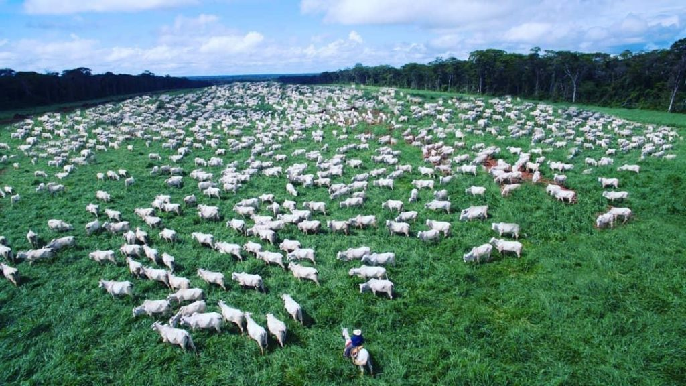

🏡 Fazendas Selecionadas
Propriedades avaliadas e verificadas.
A Pecuária Norte é uma empresa especializada na divulgação e intermediaçãode propriedades rurais na Região Norte do Brasil. Nosso objetivo é conectar investidores, produtores rurais e empresários às melhores oportunidades do mercado agropecuário.

| Estado | Destaque | Potencial |
|---|---|---|
| Pará | Pecuária e Açaí | Muito Alto |
| Tocantins | Soja e Milho | Muito Alto |
| Rondônia | Gado Bovino | Alto |
| Amazonas | Agricultura Familiar | Médio |
Propriedades avaliadas e verificadas.
Oportunidades para investidores e produtores.
Suporte durante toda a negociação.